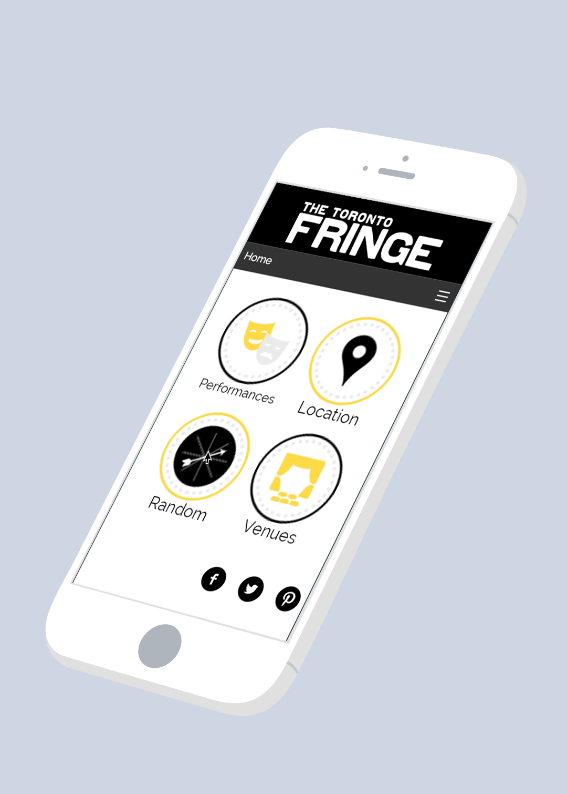
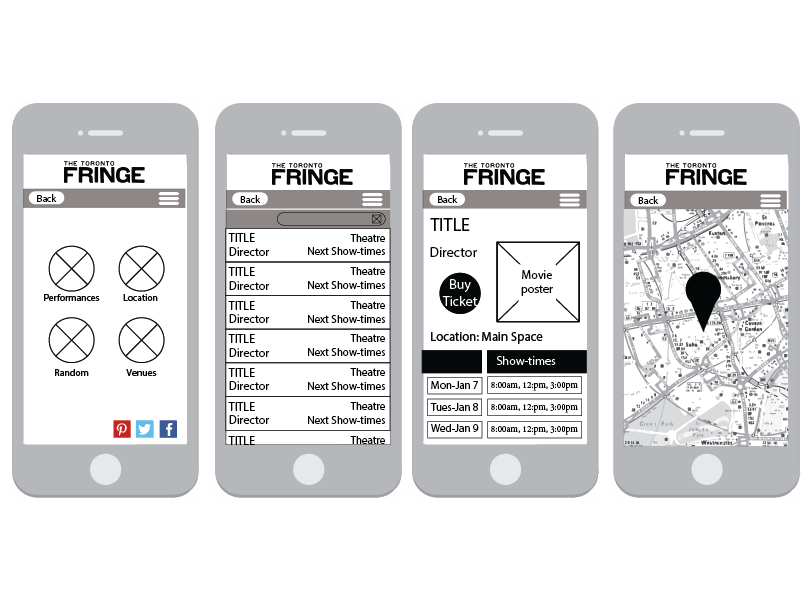
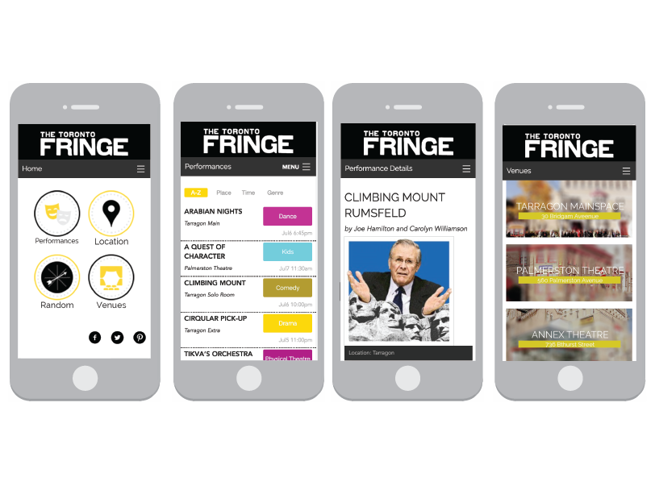

Toronto Fringe Festival App

Project Objective
Build an app for small screen device phones that will enhance the experience of attending a Toronto based festival.
ProcessWorking with a classmate, we decided we would create an app for The Fringe - Toronto's Theatre Festival. We conducted an ethnographic study, asking performing arts students and faculty at Sheridan College to participate. We chose this demographic as we thought they were most likely to attend this event. We gathered our results and brainstormed what options we would have in our app to make the experience more enjoyable for our users. We created our site map and flow chart, ensuring we didn’t miss any steps for our users. Our prototype wireframes were printed and tested on users in our research phase, so that we were able to determine if there were any flaws in our app.
As it happens with many apps and design, our final design does not look exactly like how our wireframes did but it adapted into something that was much more usable to our audience, which was made clear after our paper prototyping results. Taking inspiration from other film and stage related designs, apps and websites, we established a few different style tiles to create what we felt was the overall best look for the app and yet still held true to the nature of The Toronto Fringe Festival. We created a minimalist
approach to our final design, allowing users to know exactly what they were looking at as soon as the app opened on their phone.
In the end, with the use of our app, users are able to navigate through to check out venue maps, entertainment details and listings, and choose a performance based on their roulette wheel spin (a feature that pays homage to the selection process of Fringe Festival performances, each being chosen based on lottery).
Mockup

